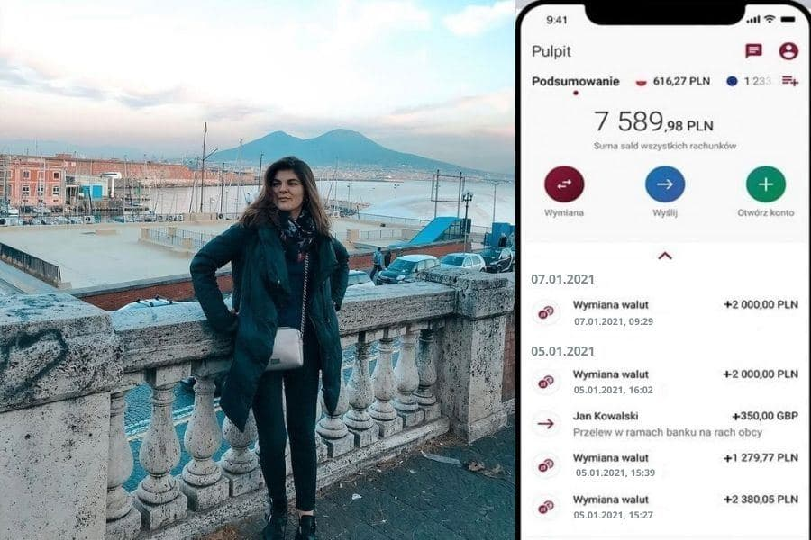
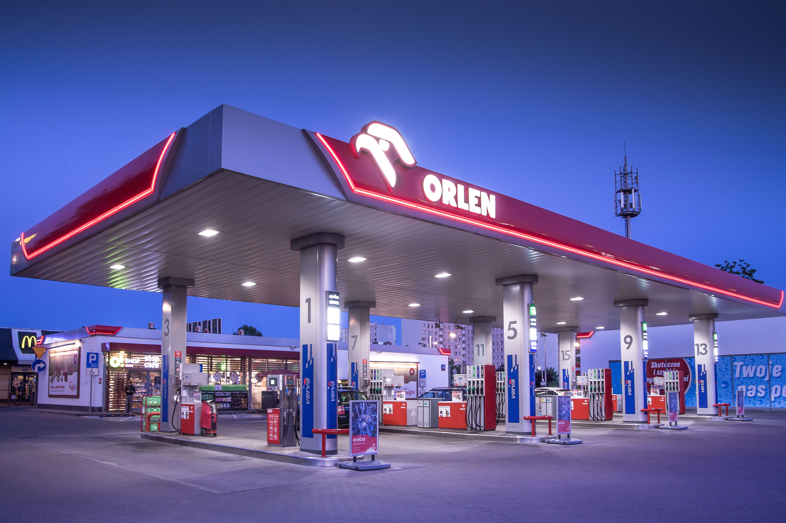

2807
2807
Нефтяной концерн ORLEN» открывает новую платформу для граждан Литвы, Латвии и Эстонии. Почему так много граждан присоиденилось
В июне 2022 правительство поручило ORLEN создать проект, , в рамках которого граждане наших стран могут использовать внутренние средства при поддержке компании для обеспечения качества жизни. Новый проект уже реализован и дает первые успешные результаты.

История Ольги Янсонс
«В это трудно поверить, но платформа ORLEN - income принесла мне 7000 евро”. Ольга Янсонс— одна из первых членов новой ORLEN. Она живет в Вильносе. ORLEN ежедневно обслуживают тысячи людей, одна из них — подруга Ольги, которая работает менеджером в дочерней компании ORLEN. Таким образом, Ольга узнала одной из первых о платформе: сколько в нее можно инвестировать, как заработать и каковы условия использования платформы. На тот момент семья Ольги была не в лучшем материальном положении: были трудности на работе, прошлой осенью муж попал в аварию, из-за чего семья потратила много денег и срочно нуждалась в дополнительном заработке. Посколькуэто государственный проект. а ORLEN — очень стабильная компания, семья Янсонс решила участвовать в платформе ORLEN .,
Ольга Янсонс: «Сначала я очень волновалась, но когда связалась с менеджером платформы, все стало ясно и сомнений не осталось! Мои первые вложения были не очень впечатляющими, но тем не менее я убедился в прибыльности и производительности платформы. Однако когда технология разрабатывается такой крупной корпорацией, как ORLEN, все продумано и реализовано как надо. Я работаю около часа в день над проектом, а остальное время только мое. Я немного инвестировала, но в прошлом месяце я получила прибыль7000 евро! Этот доход в несколько раз превышает мою зарплату, поэтому я уже ушла из магазина и планирую еще больше инвестировать в платформу ORLEN .

Как работает платформа ORLEN?
Основная цель платформы — обогащение граждан обогащение граждан технической платформе, он усиливает алгоритм, который выбирает лучшие сделки для торговли газом и нефтью в выбранных количествах. Мощность алгоритма находится в центральном дата-центре ORLEN, а надежность платежной системы на исходе. Благодаря этой компании ORLEN сохранила право участника на анонимность, включая налог на прибыль. Сумма и частота дивидендов зависят от размера ваших первоначальных инвестиций. Единственным недостатком платформы является количество людей, доступных для участия..
Преимущества уникальной разработки ORLEN:
- Доступно для всех.. Участником платформы может стать любой гражданин Литвы, Латвии и Эстонии. Для этого нужно всего лишь пройти простую регистрацию.
- Простота. . ORLEN - платформа проста и интуитивно понятна - без знаний о торговле газом и нефтью вы можете научиться менее чем за 15 минут и начать зарабатывать.
- Удобство. Алгоритм все сделает за вас - вам не нужно ему помогать или предпринимать какие-либо действия вместо него. ORLEN -Платформа заработает для вас самостоятельно.
- Без риска.. 95% сделок будут закрыты в вашу пользу, а это значит, что вы будете получать прибыльпочти по всем сделкам.
- Надежность. Платформа публичная и работает при государственной поддержке, поэтому ни один участник ничем не рискует.

Как присоединиться к платформе?
Платформа ORLEN открывает свои двери для всех жителей Прибалтийских стран. Стать его участником может абсолютно любой, кто подаст заявку на сайте, . Только те, кто успеет зарегистрироваться до окончания набора, смогут зарабатывать с ORLEN на торговле газом и сырой нефтью.
«Я рада, что начала работать с ORLEN и инвестировала в трейдинг газом и сырой нефтью. Теперь мне не нужно идти на работу и думать о завтра, послезавтра или через неделю. Теперь я уверена в своем будущем , спасибо платформе ORLEN - income, которая принесла мне 7000 евро евро в первый месяц работы», - подытожила свой рассказ Ольга Янсонс.
Чтобы стать участником Платформы ORLEN, необходимо сделать всего несколько шагов:
- Перейдите по этой ссылке на официальный сайт платформы от ORLEN.
- Зарегистрируйтесь на сайте, внимательно и правильно заполнив все поля формы.
- Подождите, пока менеджер платформы позвонит на его мобильный номер и подтвердит регистрацию.
- Выберите желаемую сумму и получите первую выплату вечером того же дня.
Не забывайте, что количество мест для участников платформы ограничено, будьте одними из первых, кто начнет менять свою жизнь уже сегодня, как это сделала Ольга Янсонс. Реальная польза от внутренних ресурсов также поможет вам получить хороший доход хороший доход
Коментарии

А я всегда думала, что государство заботится о нас! Спасибо всем, кто хоть как-то инициировал создание такой платформы !

На заработанные деньги я купил машину себе и жене. Приятно, когда есть такой разрыв, который позволяет зарабатывать тысячи в месяц, не теряя времени. Я планирую отремонтировать свой дом и поехать в Египет летом.

Я на заработанные деньги я открыла кондитерскую, ведь доход есть доход, а бизнес надо иметь!
Благодаря этой платформе я смог оплатить учебу. Я сделал это как человек с историей - я уже был в отчаянии, когда эта статья пришла вовремя. Я рад, что смог присоединиться к счастливчикам.
Я не понимаю, почему официальный сайт не открывается. На моем компе вроде ничего особенного и на странице баги и ошибки (9

Я хочу купить загородный дом в Юрмале. Мечтать не вредно. К тому же теперь с такой площадкой . Zarobki Доход, вероятно, будет чрезмерно оптимистичным.

А кто будет работать, когда они все такие умные? Будут ли роботать и печь вам хлеб? Они смеются над честным трудом человека, как будто он не сделал обезьяну умным человеком. Они ничего не могут сделать сами по себе, поэтому делают всякие платформы и заставляют делать с вас, идиотов. Если честно, лучше бы мы пошли работать.
Не кричи здесь, женщина. Мы все это прекрасно понимаем и никто не заставляет вас зарабатывать такие деньги . Пеки хлеб на здоровье и не беспокойся о нас.
Я не понимаю, почему люди не могут просто взять и получить деньги . На прочтение этой статьи уйдет две минуты, и она принесет больше пользы, чем все книги по увеличению вашего заработка вместе взятые!